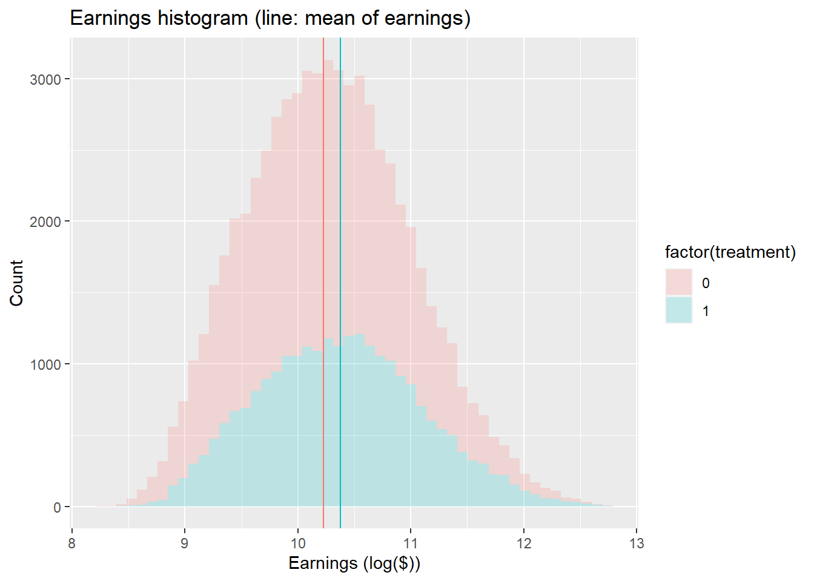
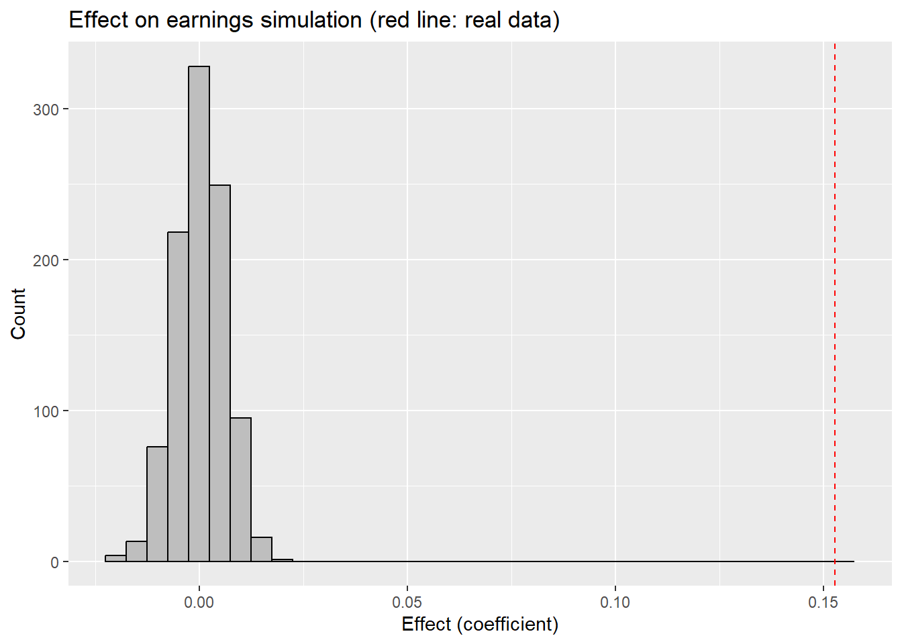

# A tibble: 4 × 2
town_group treatment_mean
<int> <dbl>
1 0 0
2 1 0.249
3 2 0.495
4 3 0.747stats2_final_brh60
Final Project (RCT)
A Randomized Controlled Trial (RCT) is the most formalized and rigorous form of hypothesis testing. It centers around designing an experiment where as much as practical is either held constant, allowed to vary wildly as naturally as possible, or determined by the flip of a coin (or roll of the dice, or what have you). This one specific aspect is excruciatingly managed through randomness, usually to route subjects into one of two groups: treatment, or control. The control group would be allowed to vary normally, just how it would vary in normal life. The treatment group would also have the same freedom, but with one “secret ingredient” added. Then all the results from both groups would be monitored and then the outcomes compared.
In this specific example (seed offerings), the seeds are meant to be more robust in a changing climate, but also should not negatively impact the earnings of farmers. It seems from the wording that the seeds were available to all, but specifically offered to the treatment group. This “intent to treat” would be considered the offering itself, and those that “accepted” the offer and used the seeds would be considered having a “treatment on the treated” effect. For the seeds, it would obviously be wonderful if using them made farmers more money, acceptable if it had no effect on earnings, and not a viable product if it had a negative impact on earnings. This experiment design sounds like it is also set up to measure a little bit of promotional mentality and marketability (will offering the new seeds increase use). We can also measure if merely being offered the seeds (not just the use of the new seeds) has any impact.
Causality claims cannot be proven, but they can be disproven. So we will make some attempts to disprove causality if we see a correlation.
What follows is a look at the given “new seeds” example in detail.
The columns in the data:
• person_id = identfiction number for a farmer
• town_id = identfiction number for the town the farmer lives in
• town_group = town group assignment (group 0, 1, 2, or 3)
• treatment = indicator variable equal to 1 for treatment, 0 for control
• uses_new_seeds = indicator variable equal to 1 if the farmer used the new seeds
• hhld_size = individual’s household size
• age_head_hhld = individual’s age
• married = individual’s marital status
• lnearnings = log of household earningsLet’s take a look and see what RCT-based concepts map onto the variables in our dataset directly:
MAPPING:
• lnearnings = outcome
• town_group = cluster
• treatment = itt
• uses_new_seeds = tot
UNMAPPED:
• person_id = identfiction number for a farmer
• town_id = identfiction number for the town the farmer lives in
• hhld_size = individual’s household size
• age_head_hhld = individual’s age
• married = individual’s marital statusThe treatment groups in our data were also metered out according to a gradient schema:
Group and treatment percentage:
0: none
1: 25%
2: 50%
3: 75%
Let’s start by confirming what we were given about groups and treatment rates.
So we can see that the treatment rates within each group are as described. Now let’s check check how the “treatment” of offering the seeds relates to actual seed usage!
# A tibble: 5 × 3
# Groups: treatment [2]
treatment uses_new_seeds n
<int> <int> <int>
1 0 0 24051
2 0 1 16149
3 0 NA 4774
4 1 1 24489
5 1 NA 2251This looks pretty encouraging. Here we can see that no one was offered the seeds and refused (at least no one that didn’t attrit anyway). Next, we’ll look at attrition and if we can see any relationship between attrition and treatment.
===============================================
Dependent variable:
---------------------------
attritted
-----------------------------------------------
treatment -0.022***
(0.002)
Constant 0.106***
(0.001)
-----------------------------------------------
Observations 71,714
R2 0.001
Adjusted R2 0.001
Residual Std. Error 0.297 (df = 71712)
F Statistic 91.711*** (df = 1; 71712)
===============================================
Note: *p<0.1; **p<0.05; ***p<0.01It looks like there was about a 2% higher likelihood of attritting from the treatment group than the control (with high statistical significance). But I think even though it’s statistically significant, we can ignore it initially. Missing values (attrition) and dealing with them can be a tricky part of processing an RCT. But there are ways to deal with it if needed (trimming).
Now we’re ready to do a preliminary estimate of the impact of new seed use on earnings. We’ll do one for the treatment variable and one based on if the subject used the seeds (uses_new_seeds). And then one without and then with controls for other factors.
===============================================
Dependent variable:
---------------------------
lnearnings
-----------------------------------------------
treatment 0.153***
(0.006)
Constant 10.224***
(0.004)
-----------------------------------------------
Observations 64,689
R2 0.010
Adjusted R2 0.010
Residual Std. Error 0.720 (df = 64687)
F Statistic 686.395*** (df = 1; 64687)
===============================================
Note: *p<0.1; **p<0.05; ***p<0.01These look promising! Let’s see what it looks like when we add in control variables from the other columns in the data.
================================================
Dependent variable:
----------------------------
lnearnings
------------------------------------------------
treatment 0.151***
(0.005)
hhld_size 0.251***
(0.002)
age_head_hhld 0.013***
(0.0004)
married 0.150***
(0.005)
Constant 8.648***
(0.015)
------------------------------------------------
Observations 64,689
R2 0.243
Adjusted R2 0.243
Residual Std. Error 0.630 (df = 64684)
F Statistic 5,196.926*** (df = 4; 64684)
================================================
Note: *p<0.1; **p<0.05; ***p<0.01So here we see that earnings correlates with treatment, but also a good bit with household size and marital status.
================================================
Dependent variable:
----------------------------
lnearnings
------------------------------------------------
uses_new_seeds 0.251***
(0.006)
Constant 10.124***
(0.005)
------------------------------------------------
Observations 64,689
R2 0.028
Adjusted R2 0.028
Residual Std. Error 0.713 (df = 64687)
F Statistic 1,874.174*** (df = 1; 64687)
================================================
Note: *p<0.1; **p<0.05; ***p<0.01Wow, new seed use, regardless of treatment status, has a very strong link to earnings without a doubt.
================================================
Dependent variable:
----------------------------
lnearnings
------------------------------------------------
uses_new_seeds 0.254***
(0.005)
hhld_size 0.252***
(0.002)
age_head_hhld 0.013***
(0.0003)
married 0.150***
(0.005)
Constant 8.544***
(0.016)
------------------------------------------------
Observations 64,689
R2 0.262
Adjusted R2 0.262
Residual Std. Error 0.622 (df = 64684)
F Statistic 5,733.261*** (df = 4; 64684)
================================================
Note: *p<0.1; **p<0.05; ***p<0.01This mirrors what we saw above regarding household size and marital status. Let’s peek at it visually in a histogram.

This is quite a substantial increase in earnings, merely from being offered new seeds. Let’s compare this to a contrast of subjects who merely used the seeds vs those who did not.
This shows an even larger impact on earnings! The mean earnings of all who used the seeds was well-above that of those who did not.
Before we go on, let’s see what we can find by exploring the relationship of earnings with household size and marital status. These two variables could be explaining the increase in earnings (for example, if somehow only married farmers used the new seeds or only large families did).
# A tibble: 4 × 3
# Groups: treatment [2]
treatment married n
<int> <int> <int>
1 0 0 19352
2 0 1 25622
3 1 0 11533
4 1 1 15207So this seems like there’s a fair distribution of marital status across treatment, let’s confirm the same about household size.
# A tibble: 10 × 3
# Groups: treatment [2]
treatment hhld_size n
<int> <int> <int>
1 0 2 7636
2 0 3 7249
3 0 4 15849
4 0 5 6248
5 0 6 7992
6 1 2 4587
7 1 3 4310
8 1 4 9344
9 1 5 3655
10 1 6 4844Other than the huge spike in the control group where household size is 4, that seems pretty acceptable as far as balance.
Next, let’s look at this graphically.
This looks alarmingly linear. So much so that it almost as though the data were programmatically generated. Not just the linearity of each, but the remarkable exactness to which they are parallel. Given how anomalously plentiful households of size four were, I would expect there to be at least some variation at that value. (But I think we can wave a magic wand and ignore this in this particular setting for now)
Let’s just take a peek and see if seed use shares a similar trend.
Yes, this also looks alarmingly linear, but again, we will wave our hands to this to excuse the obvious. Let’s also just glance at the same relationship around marital status.
`summarise()` has grouped output by 'treatment'. You can override using the
`.groups` argument.Again, this looks suspiciously linear. Let’s compare the treatment/control gap for singles to the same gap for married couples.
[1] 0.0238155Okay, so this isn’t perfectly matched, but it is indeed suspicious that our data are quite that tightly coupled.
Getting back to the heart of the study: the relationship between treatment and earnings. Let’s take a look at seed use through the population.
# A tibble: 7 × 3
treatment town_group seed_rate
<int> <int> <dbl>
1 0 0 0.200
2 0 1 0.392
3 0 2 0.590
4 0 3 0.804
5 1 1 1
6 1 2 1
7 1 3 1 This shows that seed use was at about 20% already in the pure control group and treatment subjects exclusively used the new seeds (dismissing attrition). Additionally, seed use increased linearly with the treatment gradient.
Let’s graphically compare the earnings of the treatment and control groups, first as a bar chart, then in a table.
# A tibble: 7 × 3
treatment town_group grp_avg
<int> <int> <dbl>
1 0 0 10.2
2 0 1 10.2
3 0 2 10.3
4 0 3 10.3
5 1 1 10.4
6 1 2 10.4
7 1 3 10.4That looks pretty good! We can clearly see the immediate jump of people using seeds, and the spillover effects of the control group within each cluster.
Before we get too excited, we want to make sure our data passes a few tough challenge. We have to make sure that we didn’t just “stumble” on a good finding with coincidental subjects and results. So what we’ll do is randomly select data to be processed “as though it were treatment” data, and check for the same coefficient we found in the real data.

One last thing we can do is make sure that attrition was random. So let’s check how strong the association(s) are between attrition status and any of our controls.
===============================================
Dependent variable:
---------------------------
attritted
-----------------------------------------------
treatment -0.022***
(0.002)
hhld_size 0.001
(0.001)
age_head_hhld -0.0001
(0.0002)
married 0.004**
(0.002)
Constant 0.101***
(0.007)
-----------------------------------------------
Observations 71,714
R2 0.001
Adjusted R2 0.001
Residual Std. Error 0.297 (df = 71709)
F Statistic 24.550*** (df = 4; 71709)
===============================================
Note: *p<0.1; **p<0.05; ***p<0.01From this we can see that the only good prediction of attrition is treatment (marriage is statistically significant, but the correlation is too weak to be of import).
However, there is one last thing we need to check with regards to the data. There is a town_id variable to identify different towns in the study. We need to check to make sure there were no particular towns that stood out (either in treatment or attrition).
===============================================
Dependent variable:
---------------------------
attritted
-----------------------------------------------
treatment -0.022***
(0.007)
Constant 0.106***
(0.005)
-----------------------------------------------
Observations 71,714
R2 0.001
Adjusted R2 0.001
Residual Std. Error 0.297 (df = 71712)
===============================================
Note: *p<0.1; **p<0.05; ***p<0.01This looks again like treatment has a slightly stronger chance than control of being an attritter. However, even though it is statistically significant, it is quite small, the permutation tests showed a significant gap between randomness and our results, and the size and significance of the earnings boost (both in treatment and in seed use) more than make up for it.
In conclusion, we have shown a strong, rigorous correlation between our treatment and increased earnings (and an even stronger payout through use of the new seeds). Reassigning treatment randomly showed insignificant results by comparison. Lastly, attrition could not be attributed to any observable factor documented.